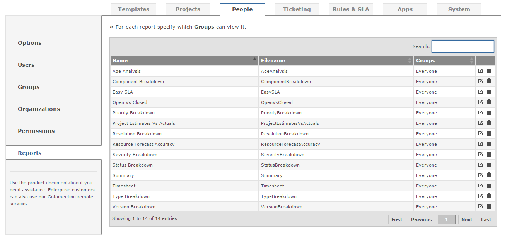

Report permission are used to define which user group can execute each report.
You define groups who can access the report by clicking on the edit icon next to the report. You can also delete reports via the trash can icon.
